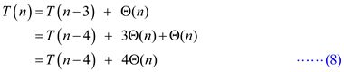

Operation of Merge – sort on the array
A = < 3, 41, 52, 26, 38, 57, 9, 49 >
The operation of merge sort can be shown as follows:
The unsorted elements which are stored in the array are first segregated into individual elements using the divide and conquer technique. The merge sort algorithm splits the array into half. When a single element is left, it is sorted. If the array has more than one element, the array is split recursively and the merge sort is invoked on both halves.
When the halves are sorted, the merge operation is performed in which the elements are merged by taking the two smaller elements together and combining them into a sorted array which can be shown below:
Modified version of MERGE procedure that does not use sentinels:
MERGE (A, p, q, r)
// Calculate the length (n1) of the sub array A[p..q]
1 n1 = q - p+1
// Calculate the length (n2) of the sub array A[q+1..r]
2 n2 = r – q
// Create the left array L and right array R
3 L [1..n1] and R [1..n2]
// Copy the elements of the subarray A[p..q] into the array L [1..n1]
4 for i =1 to n1
5 L[i] = A[p+i-1]
// Copy the elements of the subarray A[q+1..r] into the array R [1..n2]
6 for j =1 to n2
7 R[j] = A[q + j]
// Set the values of variable i and j to 1
8 i=1
9 j=1
// merge the lists
10 for k = p to r
// check if the index i is greater than n1. If true, then it indicates that the array
// L is empty. Then copy the remaining elements of array R into array A.
11 if (i > n1)
12 A[k] = R[j]
13 j = j + 1
// check if the index j is greater than n2. If true, then it indicates that the array
// R is empty. Then copy the remaining elements of array L into array A.
14 else if (j > n2)
15 A[k] = L[i]
16 i = i + 1
// Compare L[i] and R[j]. If L[i]<= R[j], then copy the element L[i] into array
// A and increment the index i
17 else if L[i] <= R[j]
18 A[k] = L[i]
19 i = i + 1
// If L[i]> R[j], then copy the element R[j] into array A and increment the
// index j
20 else
21 A[k] = R[j]
22 j = j + 1
Explanation:
In the above algorithm, the use of sentinels has been removed. Instead of using the sentinels, the indexes i and j are used.
• The index i is used to keep track of the number of elements of the array L copied into array A.
• The index j is used to keep track of the number of elements of the array R copied into array A.
• In each iteration of the loop, the value of the index i is compared with n1 and index j is compared with n2 respectively.
• n1 is the length of the array L and n2 is the length of the array R.
• If all the elements of the array L are copied, then the value of i will be greater than n1.
• If all the elements of the array R are copied, then the value of j will be greater than n2.
The line 11 checks whether the index i is greater than n1, which is the size of the array L.
• If true, then it indicates that all the elements of the array L are copied back to array A and the array L is empty.
• The lines 12 and 13 will copy the remaining elements of array R into array A.
The line 14 checks whether the index j is greater than n2, which is the size of the array R.
• If true, then it indicates that all the elements of the array R are copied back to array A and the array R is empty.
• The lines 15 and 16 will copy the remaining elements of array L into array A.
The recurrence relation is used to calculate the nth element in the given sequence. The recurrence relation is an equation which is recursively defines a sequence.
Consider the recurrence relation:

Base case:
This base case is used to prove that the statement holds the natural number n.
, when n=2
The Mathematical induction Hypothesis is as follows:
Substituting the n value then we get
Hence,
RECURSIVE-INSERTION-SORT (A,n)
1 if n>1
2 RECURSIVE-INSERTION-SORT (A,n-1)
3 INSERT(A,n)
INSERT(A,k)
// Insert A[k] to the sorted A[1..k-1]
// Use Insertion-Sort without outside loop
1 key=A[k]
2 i=k-1
3 while i>0 and A[i]>key
4 A[i+1] = A[i]
5 i--
6 A[i+1] = key
Let T(n) be the total time taken for insertion sort to sort a list with n elements.
The recurrence relation for the recursive version of the insertion sort is,
The running time for the recursive version of the insertion sort can be calculated using substitution method as shown below:
The recurrence is
Substitute n=n-1 in equation (1)
Substitute n=n-2 in equation (1)
Substitute n=n-3 in equation (1).
Substitute n=1 in equation (1).
Substitute equation (2) in equation (1).
Substitute equation (3) in equation (6).
Substitute equation (4) in equation (7).

When n=1, substitute equation (5) in the previous equation.
Therefore, the running time for the recursive version of the insertion sort is approximately equal to .
Iterative version of binary search:
Binary Search (A, v)
1.  , ,
, ,
2. while and found
//calculate the mid
3.
//check whether A[mid] is equal to the search element v
// if A[mid] is equal to the search element v, element is found
4. if
5.
// if A[mid] is less than the search element v, then assign
6. else if
7.
// if A[mid] is greater than the search element v, then assign
8. else
9.
// if found is true, then the element is found at location mid
10. if (found==true)
11. return mid
12. else
13. return NIL
Worst case running time of binary search:
Worst case refers to the case when the element to be searched is not found in the list.
Let denote the length of the sub array being searched on the iteration of loop 2-9.
The length of the subarray is halved in each iteration.
In the first iteration,
In the second iteration
In the third iteration
In the fourth iteration
In the kth iteration,
Iteration stops when the length of the subarray is 1.
In the kth iteration,
From equation (1) and (2),
Apply on both
sides.
on both
sides.
Therefore, the running time of Binary Search is in worst case.
The INSERTION-SORT procedure uses a linear search to scan through the sorted sub array A[1…..j-1].
INSERTION-SORT (A)
1 for j = 2 to A. length
2 key =A[j]
3 //Insert A[j] into the sorted sequence A[1…j – 1].
4 i = j – 1
5 while i >0 and A [ i ] > key
6 A [ i+1 ] = A [ i ]
7 i = i -1
8 A[i+1] = key
To locate the insertion position (A[i]>key) among the sorted sub-array A[1…j – 1], the procedure INSERTION–SORT uses linear search technique.
Because the array is already sorted using loop invariant, it can select the middle of A[1, j-1], check to see if value is greater or lower value, and recursively repeat this procedure until left with one element.
The pseudo code for such an algorithm is:
Binary-Insertion-Sort (A)
1 for i = 0 to A. length do
2 temp = A[i]
3 left = 0
4 right = i
5 while left < right do
6 middle = (left + right)/2
7 if temp  A[middle]
A[middle]
8 left = middle + 1
9 else right = middle
10 for j = i to left
11 do
12 stemp = A[j 1
]
1
]
13 A[j1
] = A[j]
14 A[j ] = stemp
15 j = j 1
In binary search, the length of the subarray is halved in the iterations.
In the first iteration,
In the second iteration
In the third iteration
In the fourth iteration
In the kth iteration,
Iteration stops when the length of the subarray is 1.
In the kth iteration,
From equation (1) and (2),
Apply on both sides.
Therefore, binary search required comparisons where
The first for loop iterates n times and the algorithm takes times.
Therefore, the running time of the algorithm is .
The time required to find the element to be replaced is. In order
to insert the element in the required position, remaining elements
need to be shifted. The time required to shift the elements is
 .
.
The total time required to find and insert the element is
 .
.
Therefore, it is not possible to improve the overall worst-case running of insertion sort to time even binary search is used instead of linear search.
It is given that the set S contains n integers. It is required to find two elements in S such that their sum is exactly x. This can be achieved using the binary-search algorithm.
• Assume that there exist two elements such that their sum is x. Also assume y be the second element of those two elements. Then, obviously, the first element be the difference between x and y.
• Thus, it is enough to find whether the first element (difference) exists in the set S or not using binary-search.
Assume that the set S is an array and contains positive integers. Then the required algorithm is as follows:
Algorithm running time:
• The for loop in the step 2 runs n times. In each iteration, one element(y) from S is taken and applied binary search to find whether the difference between x and y (i.e., second element), is exist in the S or not.
• Obviously, the worst case run time of binary-search is .
• In each iteration of the for loop, binary-search algorithm will be executed. That is, binary-search algorithm runs n times in the worst case.
• Since the run time of binary search is and the binary-search algorithm runs n times, the overall running time of the given algorithm is n*=.
Therefore the total running time of the algorithm is